Guía de la gestora de incapacidades
Panel de incapacidades
Revisa lo que envían los colaboradores, copia los datos al ERP, enlaza las prórrogas y envía las alertas de 30 y 150 días.
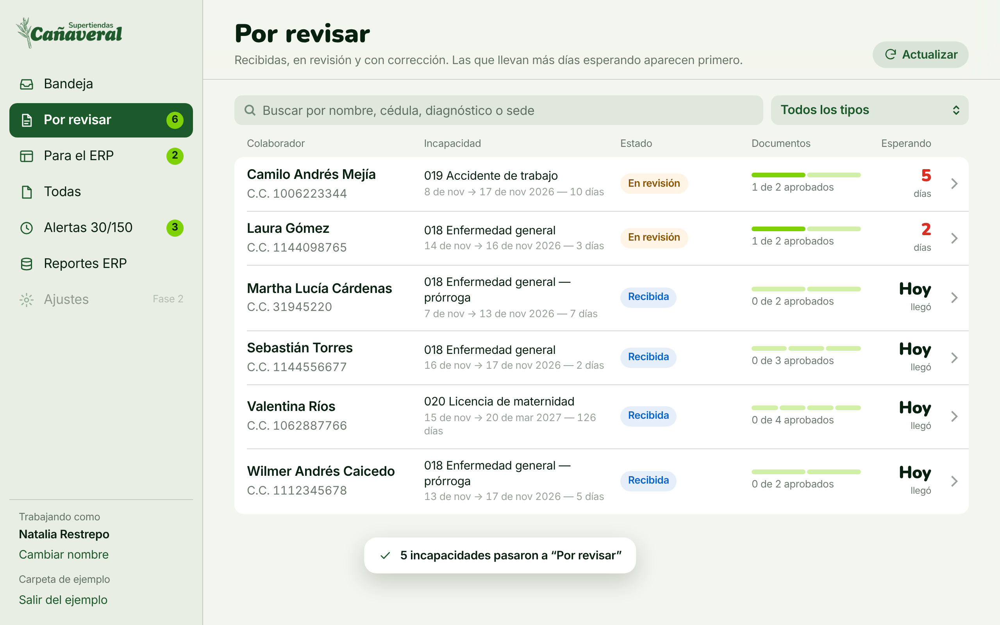
Gestión Humana — Supertiendas Cañaveral S.A.S.
Guía de la gestora de incapacidades
Revisa lo que envían los colaboradores, copia los datos al ERP, enlaza las prórrogas y envía las alertas de 30 y 150 días.

Gestión Humana — Supertiendas Cañaveral S.A.S.
El panel es una página web que trabaja sobre la carpeta Incapacidades de OneDrive, en tu computador. No tiene servidor: todo queda en esa carpeta.
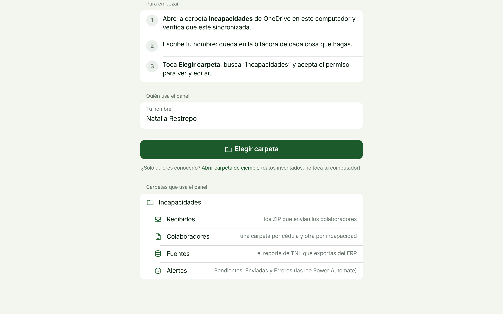
El menú de la izquierda sigue el orden del trabajo. Los números verdes dicen cuántas cosas tienes pendientes.
| Menú | Qué haces ahí |
|---|---|
| Bandeja | Ves los ZIP que llegaron y los pasas a revisión. |
| Por revisar | Abres cada incapacidad, apruebas o rechazas los documentos y revisas los datos. |
| Para el ERP | Las aprobadas que faltan por registrar en el ERP. |
| Radicación EPS | Las registradas: las radicas en el portal de la EPS o ARL y anotas el radicado y la respuesta. |
| Todas | Todas las incapacidades, con filtros por estado y tipo, y un buscador. |
| Alertas 30/150 | Cadenas de prórrogas largas: las revisas y envías la alerta. |
| Reportes ERP | Cargas el reporte de TNL del ERP y ves la doble verificación. |
Los colaboradores suben su ZIP con el link de OneDrive. Aparecen en Bandeja.
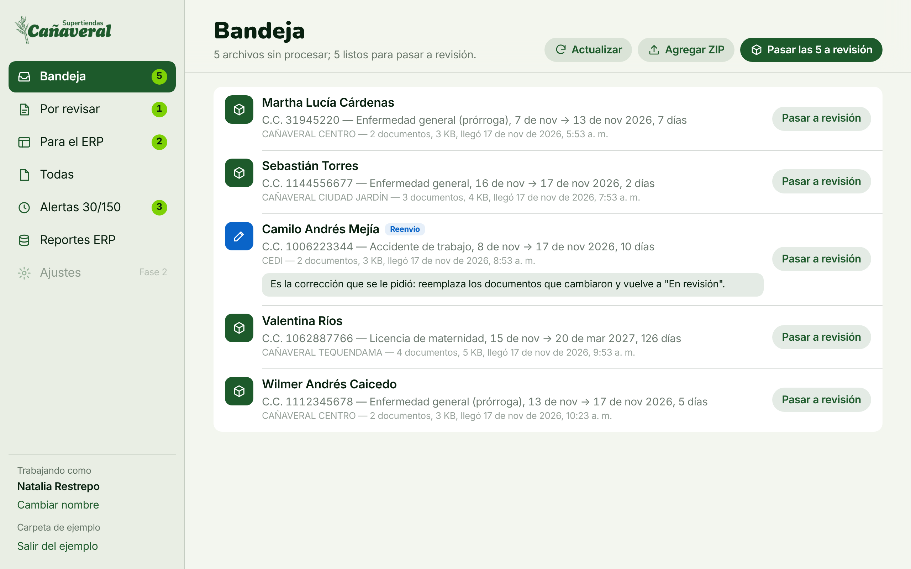
En Por revisar salen primero las que llevan más días esperando. El número se pone rojo a los 2 días.
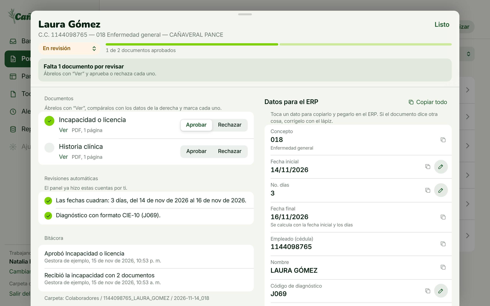
Ábrelos con Ver y compáralos con los datos de la derecha. Luego marca cada uno.
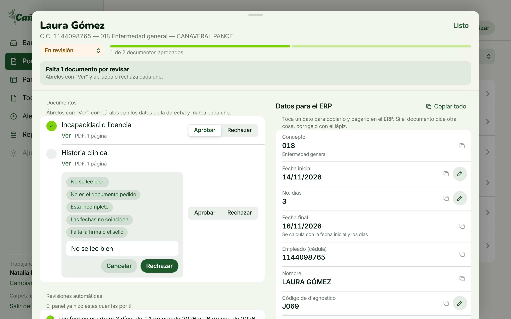
El panel hace las cuentas por ti: si la fecha final cuadra con los días, si el diagnóstico tiene formato CIE-10, si la prórroga está dentro de los 30 días, si se cruza con otra incapacidad del mismo colaborador, si empezó hace más de 30 días…
Si rechazaste algo o falta un documento, arriba aparece Pedir corrección.
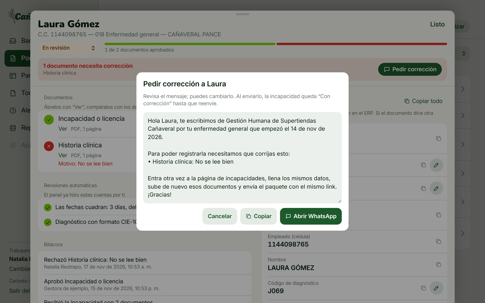
Están en el mismo orden de la pantalla Tiempos no laborados del ERP.
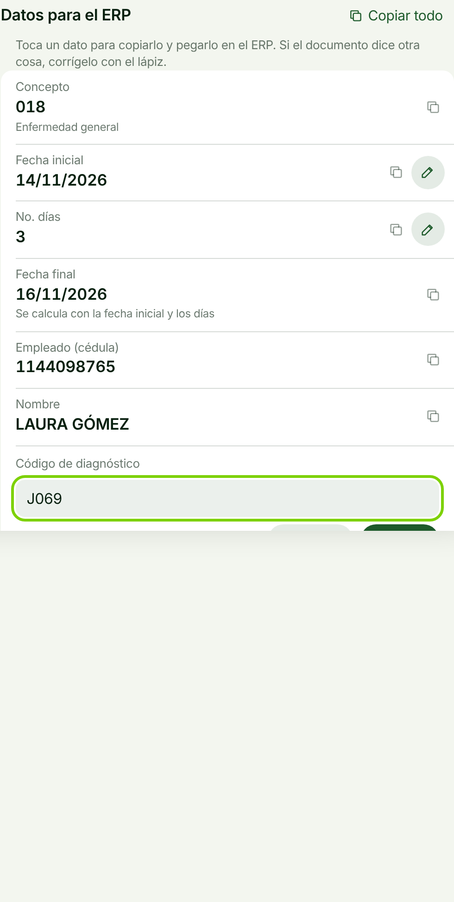
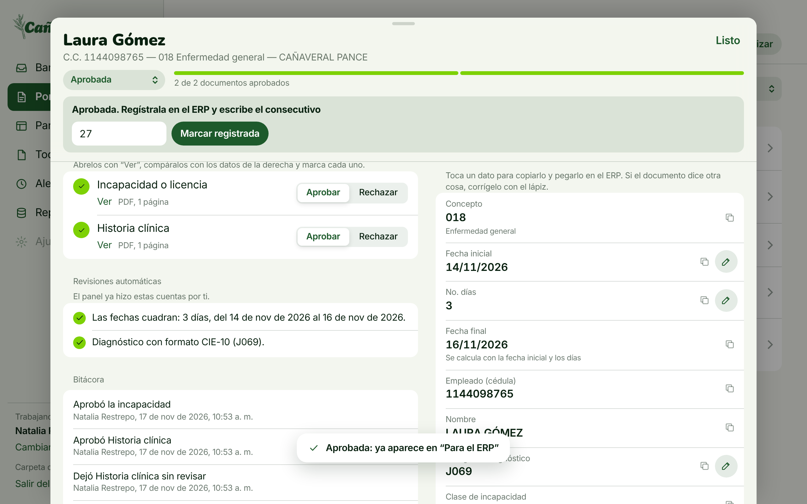
Aquí quedan las incapacidades aprobadas que aún no registras. De aquí sale el plano para cargarlas al ERP.
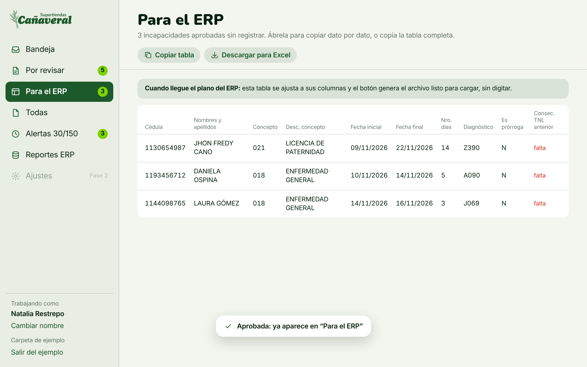
Qué lleva el plano
Los datos obligatorios de cada incapacidad; los valores de liquidación en 0 (el ERP los calcula); la fecha del accidente solo en accidentes de trabajo, y el número de prórroga solo en prórrogas.
Es el Consecutivo TNL anterior del ERP. Con él se suman los días de toda la cadena.
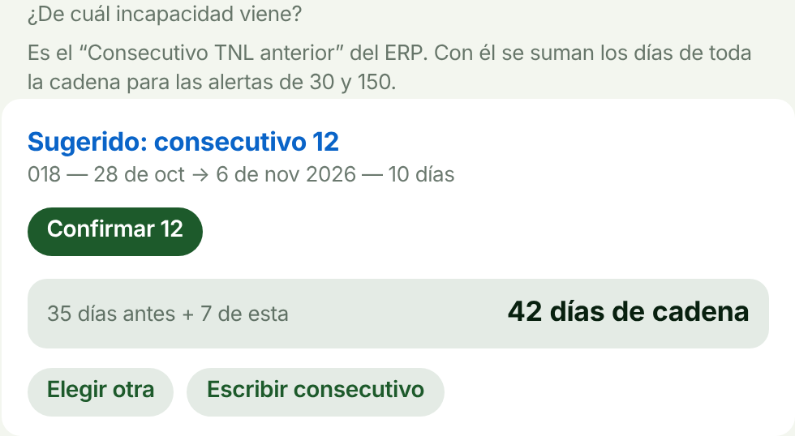
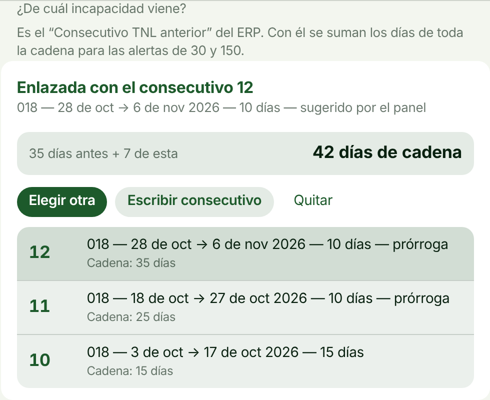
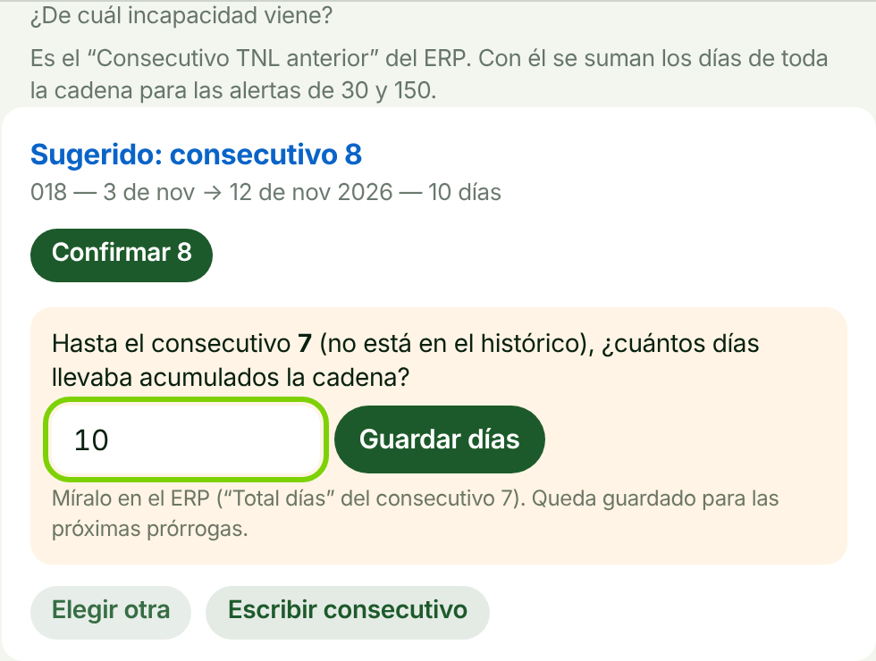
Con el reporte de tiempos no laborados (TNL), el panel conoce el histórico. Sin él, todo funciona, pero las prórrogas se enlazan a mano.
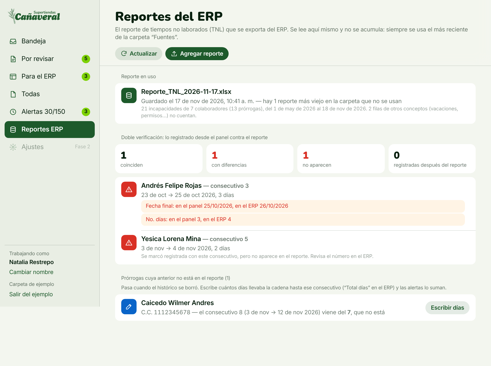
Cuando una incapacidad queda registrada en el ERP, pasa a Radicación EPS, agrupada por EPS. Los accidentes de trabajo van a la ARL.
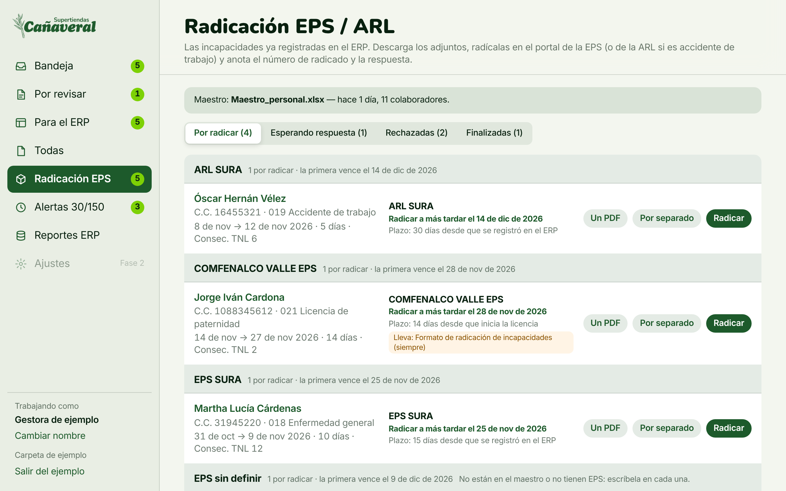
Salen las cadenas de prórrogas seguidas que pasan 30 días, se acercan a 150 (desde 120) o pasan 150. Las incapacidades sueltas y las licencias no cuentan.
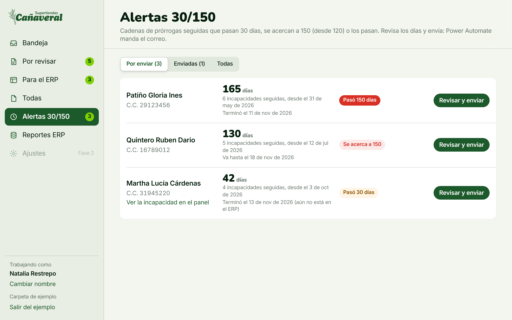
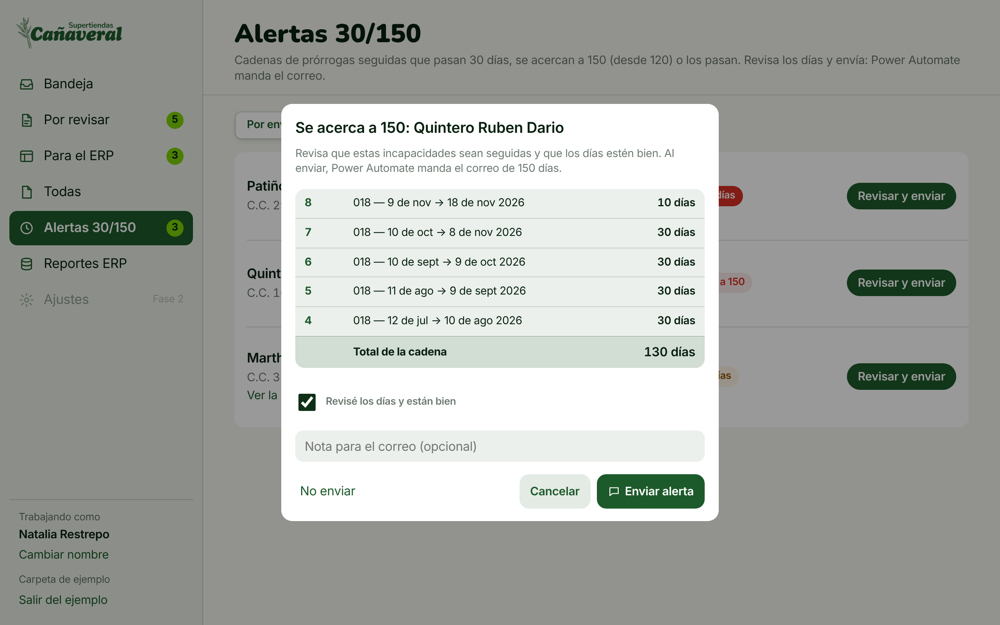
“El navegador no puede abrir carpetas”
Usa Chrome o Edge en computador. En Safari, Firefox o el celular no funciona.
No veo lo que acaban de enviar
OneDrive tarda unos minutos en sincronizar. Toca Actualizar.
“Otra persona cambió esta incapacidad”
Alguien la editó al mismo tiempo. Ciérrala y ábrela otra vez para ver sus cambios.
“No se encontró la carpeta”
La movieron o le cambiaron el nombre. Toca Usar otra carpeta y elígela de nuevo.
Me equivoqué al aprobar
Toca otra vez Aprobar en ese documento y queda sin revisar. También puedes cambiar el estado arriba.
Una incapacidad no aplica
Cambia el estado a No procede, arriba en la ficha. Queda en la bitácora quién y cuándo.
El reporte sale en rojo
No es el reporte de TNL o le faltan columnas (cédula, consecutivo, concepto, fechas, días).
¿Dónde están los archivos?
En Colaboradores / cédula_NOMBRE / fecha_tipo. Lo reemplazado queda en _anteriores.
Nada se borra solo
El panel nunca borra documentos: mueve los ZIP a Procesados y guarda las versiones viejas en _anteriores. Cada cambio queda en la bitácora de la incapacidad.